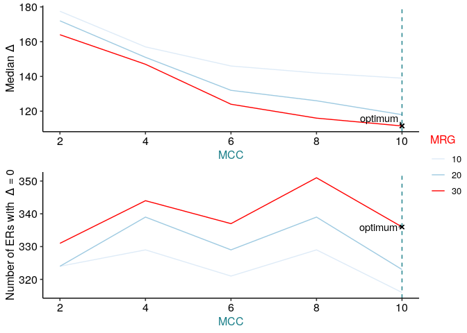

The goal of ODER is to well define the expressed regions from RNA-squencing experiments so that they can be confidently identified as pre-existing annotated exons or unannotated novel exons. ODER does this by allowing the user to vary two features -the MCC(Mean Coverage Cutoff) and MRG (Max Region Gap) - to generate various expressed regions and identifying the combination of MCC and MRG that most accurately defines the expressed region(s) by comparing it to a “gold standard” set of exons. This is done by calculating the exon delta (the absolute difference between the ER definition and the corresponding exon boundaries).
The optimally defined Expressed regions will be stored in the GenomicRanges GRanges class and ODER has several functions that will operate on these optimal ERs such as: plotting the various exon deltas across MCCs and MRGs annotating the ERs with junction data refining annotated ERs using the junction data generate a count matrix
Installation instructions
Get the latest stable R release from CRAN. Then install ODER using from Bioconductor the following code:
if (!requireNamespace("BiocManager", quietly = TRUE)) {
install.packages("BiocManager")
}
BiocManager::install("ODER")And the development version from GitHub with:
BiocManager::install("eolagbaju/ODER")Example
This is a basic example which shows you how to solve a common problem:
library("ODER")
library("magrittr")
# loading in RNA seq data to run ODER on
gtex_metadata <- recount::all_metadata("gtex")
#> Setting options('download.file.method.GEOquery'='auto')
#> Setting options('GEOquery.inmemory.gpl'=FALSE)
#> 2021-07-23 22:08:26 downloading the metadata to /tmp/RtmpxcnhA1/metadata_clean_gtex.Rdata
gtex_metadata <- gtex_metadata %>%
as.data.frame() %>%
dplyr::filter(project == "SRP012682")
url <- recount::download_study(
project = "SRP012682",
type = "samples",
download = FALSE
)
# .file_cache is an internal function to download a bigwig file from a link if the file has been downloaded recently, it will be retrieved from a cache
bw_path <- ODER:::.file_cache(url[1])
gtf_url <- "http://ftp.ensembl.org/pub/release-103/gtf/homo_sapiens/Homo_sapiens.GRCh38.103.chr.gtf.gz"
gtf_path <- ODER:::.file_cache(gtf_url)
# getting the optimally defined ERs by finding the combination of Mean Coverage Cut-off and Max Region Gap that gives the smallest exon delta
# MCC - Mean Cutoff Coverage - this is the minimum read depth that a read needs to have to be considered expressed
# MRG - Max Region Gap - this is the maximum number of base pairs between reads that fall below the MCC before you would not include it as part of the expressed region
opt_ers <- ODER(
bw_paths = bw_path, auc_raw = gtex_metadata[["auc"]][1], # auc_example,
auc_target = 40e6 * 100, chrs = c("chr21", "chr22"),
genome = "hg38", mccs = c(2, 4, 6, 8, 10), mrgs = c(10, 20, 30),
gtf = gtf_path, ucsc_chr = TRUE, ignore.strand = TRUE,
exons_no_overlap = NULL, bw_chr = "chr"
)
#> Loading required package: BiocGenerics
#> Loading required package: parallel
#>
#> Attaching package: 'BiocGenerics'
#> The following objects are masked from 'package:parallel':
#>
#> clusterApply, clusterApplyLB, clusterCall, clusterEvalQ,
#> clusterExport, clusterMap, parApply, parCapply, parLapply,
#> parLapplyLB, parRapply, parSapply, parSapplyLB
#> The following objects are masked from 'package:stats':
#>
#> IQR, mad, sd, var, xtabs
#> The following objects are masked from 'package:base':
#>
#> anyDuplicated, append, as.data.frame, basename, cbind, colnames,
#> dirname, do.call, duplicated, eval, evalq, Filter, Find, get, grep,
#> grepl, intersect, is.unsorted, lapply, Map, mapply, match, mget,
#> order, paste, pmax, pmax.int, pmin, pmin.int, Position, rank,
#> rbind, Reduce, rownames, sapply, setdiff, sort, table, tapply,
#> union, unique, unsplit, which.max, which.min
#> Loading required package: S4Vectors
#> Loading required package: stats4
#>
#> Attaching package: 'S4Vectors'
#> The following object is masked from 'package:base':
#>
#> expand.grid
#> [1] "2021-07-23 22:08:41 - Obtaining mean coverage across 1 samples"
#> [1] "2021-07-23 22:08:41 - chr21"
#> [1] "2021-07-23 22:08:43 - chr22"
#> [1] "2021-07-23 22:08:44 - Generating ERs for chr21"
#> [1] "2021-07-23 22:08:51 - Generating ERs for chr22"
#> [1] "2021-07-23 22:08:56 - Loading in GTF..."
#> [1] "2021-07-23 22:09:44 - Obtaining non-overlapping exons"
#> [1] "2021-07-23 22:09:46 - Calculating delta for ERs..."
#> [1] "2021-07-23 22:09:48 - Obtaining optimal set of ERs..."
# for stranded bigwig files:
# bw_plus <- ODER:::.file_cache(url[58])
# bw_minus <- ODER:::.file_cache(url[84])
# opt_strand_ers <- ODER_strand(
# bw_pos = bw_plus, bw_neg = bw_minus,
# auc_raw_pos = gtex_metadata[["auc"]][58], auc_raw_neg = gtex_metadata[["auc"]][84],
# auc_tar_pos = 40e6 * 100, auc_tar_neg = 40e6 * 100, chrs = c("chr21", "chr22"),
# genome = "hg38", mccs = c(2, 4, 6, 8, 10), mrgs = c(10, 20, 30), gtf = gtf_path, ucsc_chr = TRUE, ignore.strand = FALSE,
# exons_no_overlap = NULL, bw_chr = "chr"
# )
opt_ers
#> $opt_ers
#> GRanges object with 14662 ranges and 0 metadata columns:
#> seqnames ranges strand
#> <Rle> <IRanges> <Rle>
#> [1] chr21 5032176-5032217 *
#> [2] chr21 5033408-5033425 *
#> [3] chr21 5034717-5034756 *
#> [4] chr21 5035188-5035189 *
#> [5] chr21 5036577-5036581 *
#> ... ... ... ...
#> [14658] chr22 50798779-50798835 *
#> [14659] chr22 50798884-50799149 *
#> [14660] chr22 50799209-50799284 *
#> [14661] chr22 50799669-50799744 *
#> [14662] chr22 50800460-50800587 *
#> -------
#> seqinfo: 2 sequences from an unspecified genome; no seqlengths
#>
#> $opt_mcc_mrg
#> [1] "mcc_10" "mrg_30"
#>
#> $deltas
#> # A tibble: 15 x 7
#> mcc mrg sum mean median n_eq_0 propor_eq_0
#> <dbl> <dbl> <int> <dbl> <dbl> <int> <dbl>
#> 1 2 10 2613404 929. 178. 324 0.115
#> 2 2 20 2347085 887. 172 324 0.122
#> 3 2 30 2136347 857. 164 331 0.133
#> 4 4 10 2314874 950. 157 329 0.135
#> 5 4 20 2067967 910. 151 339 0.149
#> 6 4 30 1878983 873. 147 344 0.160
#> 7 6 10 2084841 971. 146 321 0.149
#> 8 6 20 1790136 900. 132 329 0.165
#> 9 6 30 1553676 833. 124 337 0.181
#> 10 8 10 1929926 985. 142 329 0.168
#> 11 8 20 1651370 922. 126 339 0.189
#> 12 8 30 1417918 842. 116 351 0.209
#> 13 10 10 1771837 1009. 139 316 0.180
#> 14 10 20 1457726 911. 118 323 0.202
#> 15 10 30 1323807 876. 112. 336 0.222
# opt_strand_ersThe median exon delta represents the overall accuracy of all ER definitions, whereas the number of ERs with exon delta equal to 0 indicates the extent to which ER definitions precisely match overlapping exon boundaries.

#> [1] "2021-07-23 22:09:50 - Obtaining co-ordinates of annotated exons and junctions from gtf/gff3..."
#> [1] "2021-07-23 22:09:50 - Importing gtf/gff3 as a TxDb..."
#> Import genomic features from the file as a GRanges object ... OK
#> Prepare the 'metadata' data frame ... OK
#> Make the TxDb object ...
#> Warning in .get_cds_IDX(mcols0$type, mcols0$phase): The "phase" metadata column contains non-NA values for features of type
#> stop_codon. This information was ignored.
#> OK
#> [1] "2021-07-23 22:11:22 - Getting junction annotation using overlapping exons..."
#> [1] "2021-07-23 22:11:22 - Tidying junction annotation..."
#> [1] "2021-07-23 22:11:22 - Deriving junction categories..."
#> [1] "2021-07-23 22:11:24 - done!"
#> [1] "2021-07-23 22:11:24 - Finding junctions overlapping ers..."
#> [1] "2021-07-23 22:12:20 - Generating a genomic state..."
#> Import genomic features from the file as a GRanges object ... OK
#> Prepare the 'metadata' data frame ... OK
#> Make the TxDb object ...
#> Warning in .get_cds_IDX(mcols0$type, mcols0$phase): The "phase" metadata column contains non-NA values for features of type
#> stop_codon. This information was ignored.
#> OK
#> Warning in .get_cds_IDX(mcols0$type, mcols0$phase): The "phase" metadata column contains non-NA values for features of type
#> stop_codon. This information was ignored.
#> extendedMapSeqlevels: sequence names mapped from NCBI to UCSC for species homo_sapiens
#> 'select()' returned 1:1 mapping between keys and columns
#> [1] "2021-07-23 22:14:36 - Annotating the Expressed regions..."
#> 2021-07-23 22:14:36 annotateRegions: counting
#> 2021-07-23 22:14:36 annotateRegions: annotating
#> [1] "2021-07-23 22:15:22 - done!"
#> [1] "2021-07-23 22:16:50 - Refining the Expressed regions..."
#> GRanges object with 2 ranges and 7 metadata columns:
#> seqnames ranges strand | grl genes
#> <Rle> <IRanges> <Rle> | <GRangesList> <CharacterList>
#> [1] chr21 5093713-5093743 * | chr21:5093712-5093744:+ ENSG00000280071
#> [2] chr21 5162182-5162248 * | chr21:5162249-5162287:+ ENSG00000280433
#> annotation og_index gene_source nearest_gene_v94_name
#> <character> <integer> <character> <character>
#> [1] intron 15 nearest gtf genes ENSG00000280071
#> [2] intron 71 nearest gtf genes ENSG00000280433
#> nearest_expressed_gene_v94_name
#> <character>
#> [1] ENSG00000264462
#> [2] ENSG00000264462
#> -------
#> seqinfo: 2 sequences from an unspecified genome; no seqlengths
#> The latest megadepth version is 1.1.0c
#> megadepth has been installed to /home/rstudio/bin
#> Warning in is.na(.x): is.na() applied to non-(list or vector) of type 'S4'
#> class: RangedSummarizedExperiment
#> dim: 6641 1
#> metadata(0):
#> assays(1): ''
#> rownames: NULL
#> rowData names(0):
#> colnames: NULL
#> colData names(1): runIn that case, don’t forget to commit and push the resulting figure files, so they display on GitHub!
Citation
Below is the citation output from using citation('ODER') in R. Please run this yourself to check for any updates on how to cite ODER.
# print(citation('ODER'), bibtex = TRUE)Please note that the ODER was only made possible thanks to many other R and bioinformatics software authors, which are cited either in the vignettes and/or the paper(s) describing this package.
Code of Conduct
Please note that the ODER project is released with a Contributor Code of Conduct. By contributing to this project, you agree to abide by its terms.
Development tools
- Continuous code testing is possible thanks to GitHub actions through usethis, remotes, and rcmdcheck customized to use Bioconductor’s docker containers and BiocCheck.
- Code coverage assessment is possible thanks to codecov and covr.
- The documentation website is automatically updated thanks to pkgdown.
- The code is styled automatically thanks to styler.
- The documentation is formatted thanks to devtools and roxygen2.
For more details, check the dev directory.
This package was developed using biocthis.